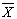
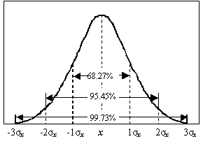
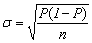
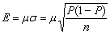
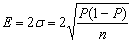
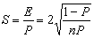

可靠度与精度
可靠度是捎观测结果的可信程度，也就是子样符合总体状态的程度。
根据概率定理，用工作抽样处理的现象接近于正态分布曲线。以平均数为中线，两侧取标准差的1倍、2倍、3倍时，其面积分别为总面积的68.25%、95.45%、99.73%，见图10-1所示，正态分布的概率如表10-1所示。
工作抽样一般取2σ的范围，即确定95.45%的可靠度，也就是说在抽取100个子样中有95.45个是接近总体状态的；或者说事前预定抽样数据中有95.45%落入2σ的范围，仅有4.55%的数据可能超出范围。

图10-1 正态分布曲线
表10-1 正态分布概率
|
范围(±σ) |
±0.76σ |
±1σ |
±1.96σ |
±2σ |
±2.58σ |
±3σ |
±4σ |
|
概率(％) |
50.0 |
68.25 |
95.0 |
95.45 |
99.0 |
99.73 |
99.99 |
精度就是允许的误差，抽样的精确度分为绝对精度E和相对精度S。当可靠度定为95.45%时，绝对精度E=2σ。根据统计学中二项分布标准σ，在一定条件下为


式中 P：观测事件发生率；n：观测次数；μ：置信系数，通常情况下取μ=2。

相对精度即为绝对精度与观测事项发生率之比：

在工作抽样中，因抽样的不同而确定不同的绝对精度标准，见表10-2。相对精度的标准可在±(5%～10%)范围内选择。一般都将可靠度定为95%，相对精度定为±5%，绝对精度为±2%～±3%。
表10-2 不同抽样目的允许的绝对精度
|
抽样目的 |
绝对精度概率标准 |
|
调查停工中断时间等管理上的问题 |
±(3.6％～4.5％) |
|
工作改善 |
±(2.4％～3.5％) |
|
决定工作地布置等时间的比率 |
±(1.2％～1.4％) |
|
制定标准时间 |
±(1.6％～2.4％) |